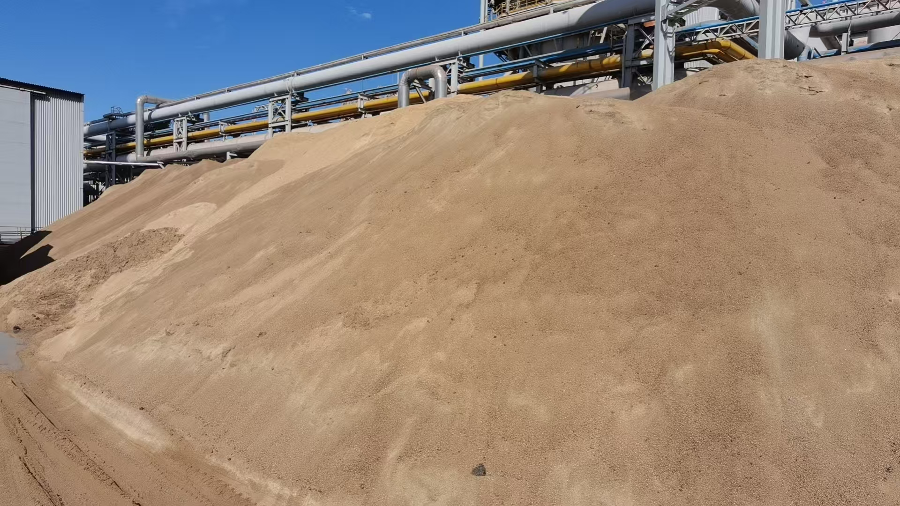

2026-08-15
Vietnam Export Momentum Raises the Bar for Cement and Clinker Logistics
Vietnam's cement and clinker exports expanded in the first seven months of 2026, highlighting how growing regional flows depend on repeatable cargo planning and port execution.
越南水泥与熟料出口增长，提高物流执行门槛
2026 年前七个月，越南水泥与熟料出口增长，表明区域贸易放量越来越依赖可重复的货盘规划与港口执行。

Vietnam exported 22.53 million tonnes of cement and clinker in the first seven months of 2026, up 13.6% year on year, according to figures from the country's National Statistics Office reported by International Cement Review. Export revenue rose 12.9% to US$841 million. July shipments alone reached 3.18 million tonnes, 5.2% above the same month a year earlier. The figures point to sustained regional demand, but they also show that volume growth must be supported by dependable logistics.
1. Export growth increases the value of schedule certainty
More cargo does not automatically mean smoother trade. Larger and more frequent flows place greater pressure on terminal windows, stock availability, inspection timing and vessel coordination. Buyers and suppliers need to align specification, parcel size and laycan early enough to avoid preventable waiting time.

2. Volume and revenue should be read together
Vietnam's seven-month export volume grew slightly faster than export revenue. That gap is a reminder that market share and shipment volume do not guarantee stronger unit economics. Freight, handling, energy and delay costs remain central to the delivered result, so commercial decisions should compare realistic landed-cost scenarios rather than headline export values alone.
3. Regional flows reward shipment-ready supply
When export corridors expand, repeatability becomes a commercial differentiator. Qualified material, predictable availability, appropriate loading methods and complete documentation reduce uncertainty for charterers and end users. The same discipline applies to clinker and to supplementary cementitious materials such as GBFS and GGBFS.

Takeaway: Vietnam's export growth is a positive regional trade signal, but sustainable performance will depend on shipment-ready supply, disciplined vessel planning and transparent delivered-cost control. Industry signal: Vietnam National Statistics Office data reported by International Cement Review on 14 August 2026.
据 International Cement Review 援引越南国家统计局数据，2026 年前七个月，越南出口水泥与熟料 2253 万吨，同比增长 13.6%；出口收入增长 12.9%，达到 8.41 亿美元。仅 7 月出口量就达到 318 万吨，同比增长 5.2%。这些数据反映出区域需求保持韧性，也说明出口放量必须由可靠物流能力支撑。
1. 出口增长提高船期确定性的价值
货量增加并不意味着贸易自然会更顺畅。更大、更频繁的货流会增加码头窗口、库存准备、检验时间与船舶协调的压力。买卖双方需要尽早确认规格、货量与 laycan，减少可以避免的等待时间。
2. 货量与收入需要结合判断
越南前七个月出口货量增速略高于出口收入增速。这提醒市场参与者，份额和货量增长并不必然带来更好的单位经济性。运费、装卸、能源与延误成本仍会决定最终结果，因此商业决策应比较现实的到岸成本情景，而不能只看出口总值。
3. 区域货流增长奖励可发运供应
当出口通道扩张时，可重复执行就会成为商业差异。合格材料、可预测货源、合适装载方式与完整单证，可以降低租船方和终端用户的不确定性。这套纪律既适用于熟料，也适用于 GBFS、GGBFS 等辅助胶凝材料。
结论：越南出口增长是积极的区域贸易信号，但可持续表现仍取决于可发运供应、有纪律的船舶规划与透明的到岸成本控制。行业信号来源：越南国家统计局数据，International Cement Review 于 2026 年 8 月 14 日报道。
Planning a clinker, GBFS or GGBFS shipment?
Share specification, quantity, destination, loading method and laycan.
正在规划熟料、GBFS 或 GGBFS 发运？
请提供规格、数量、目的地、装载方式和 laycan。